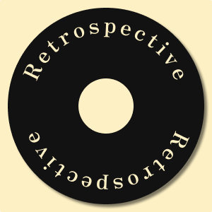

<!DOCTYPE html>
<html lang="en">
<head>
    <meta charset="UTF-8">
    <meta name="viewport" content="width=device-width, initial-scale=1.0">
    <title>SP-API Testing</title>

    <!-- Note: I added this from this code from https://stackoverflow.com/questions/27555126/bootstrap-left-and-right-glyphicons-not-showing-in-carousel 
    I think this is also needed for the glyphicon icons to work -->
    <link rel="stylesheet" href="https://maxcdn.bootstrapcdn.com/bootstrap/3.3.1/css/bootstrap.min.css"> 

    <!-- Note: I added this from this code from https://www.youtube.com/watch?v=0dmS0He_czs -->
    <link rel="stylesheet" href="https://maxcdn.bootstrapcdn.com/bootstrap/4.0.0/css/bootstrap.min.css" 
    integrity="sha384-Gn5384xqQ1aoWXA+058RXPxPg6fy4IWvTNh0E263XmFcJlSAwiGgFAW/dAiS6JXm" crossorigin="anonymous">
    <link rel="stylesheet" type="text/css" href="/css/style.css">

    <!-- This code is from https://www.w3schools.com/html/html_favicon.asp -->
    <link rel="icon" href="/assets/logo.png" sizes="">
</head>

<body>

    <div id='hidden-token' display="none"></div>
    <!-- This aint responsive -->
    <!--  -->

    <div class="main-container">
      
      <!-- Glyphicons code from here https://www.w3schools.com/bootstrap/tryit.asp?filename=trybs_carousel_icon&stacked=h -->
      <button id="prev-btn" class="btn glyphicon glyphicon-chevron-left"></button> 
      
      <div id="album-list" class="carousel">
        <!-- Album details will be dynamically added here -->
      </div>
      <!-- Glyphicons code from here https://www.w3schools.com/bootstrap/tryit.asp?filename=trybs_carousel_icon&stacked=h -->
      <button id="next-btn" class="btn glyphicon glyphicon-chevron-right"></button>
    </div>

    <script src='/js/script.js' type='text/javascript'></script>
</body>

</html>